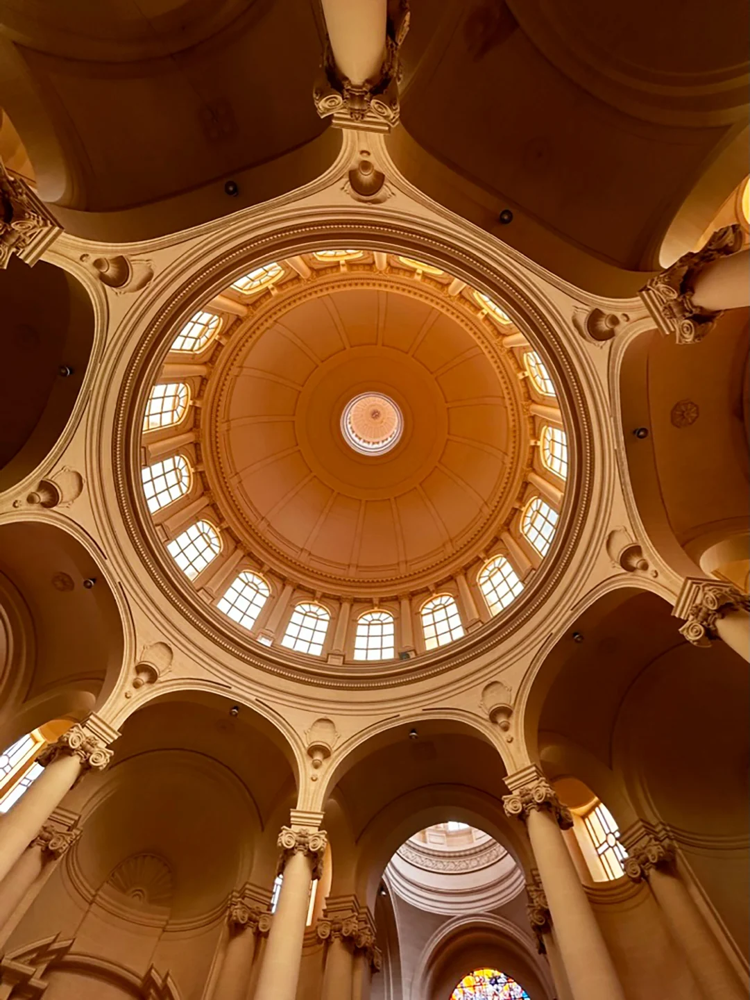

Pjazza
The restaurant lists St John the Baptist Square and describes brunch, pasta and pinsa. Its website publishes the menu and a table request form.
Inland Gozo
Look up at the Rotunda, then explore at street level. The church square, the windmill on the main road and a bakery on Soil Street give you three ways to get to know the village.

The Rotunda of St John the Baptist anchors the village centre. Visit Gozo points to the limestone craftsmanship inside, where the arches, window ring and dome are visible. Start with the square as a meeting point. Check the parish website for notices before arranging a visit inside.
On the main road, Tat-Tmien Kantunieri windmill is a separate landmark. The Cultural Heritage Directorate describes it as Gozo’s oldest surviving windmill. A government heritage account places it at a crossroads and records its commissioning under Grand Master Perellos. Consult the heritage project page when planning a visit.
The restaurant lists St John the Baptist Square and describes brunch, pasta and pinsa. Its website publishes the menu and a table request form.
The bakery on Soil Street lists bread, pies and pastries. Use the bakery’s own information to check what is available on the day.
The Xewkija Local Council lists its office on Triq Santa Katerina. Its site carries notices and local service details.
Malta Public Transport lists Ix-Xewkija on route 323, with stops including Dome 4683 and D Amato 4025 in one direction. Use the journey planner and the route timetable to choose the stop for the square, windmill or your own address.
For a trip to Malta, first plan the land connection from Ix-Xewkija to Mġarr harbour in Gozo. The separate Gozo Channel ferry runs between Mġarr and Ċirkewwa in Malta. Check the operator for service information and departure updates.
The map pin marks the church footprint by St John the Baptist Square.
Map data © OpenStreetMap contributors.
Editorial sources reviewed 17 November 2026.
Nexus Marketplace
See local homes and explore food, shops and everyday places around the neighbourhood.
Mapped places within 2 km of the centre. This can include nearby neighbourhoods.